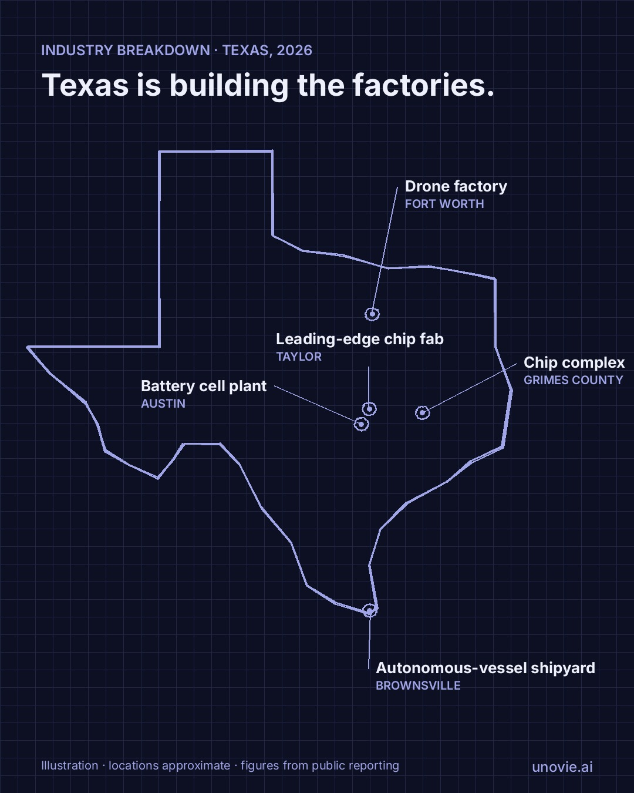

This year Texas announced or broke ground on a leading-edge chip fab, a chip complex for robots and spacecraft, a large battery cell expansion, a drone factory and a shipyard for autonomous vessels. Two of them are less than an hour from Austin, where we're based. Here is what is being built, and what tends to happen once the buildings are done.
What's being built
| Project | Where | Public figures | Where it stands |
|---|---|---|---|
| Leading-edge chip fab | Taylor | $17B initial plan; more than 3,500 direct manufacturing jobs expected | Trial operations in 2026, customer production from 2027. A second fab starts construction this year, aiming for 2030. |
| Chip complex for robots and spacecraft | Grimes County | $16.8B first phase and 3,000 jobs; county filings estimate $55–119B if every phase is built | Early construction. Plans its own power generation and battery storage on site. |
| Battery cell expansion | Austin | More than 40 GWh of installed cell capacity reported; the company says it will become North America's largest cell plant | Announced 9 November. No date or output figure yet. |
| Drone factory | Fort Worth | Up to $125M over two years, including engineering elsewhere; capacity for tens of thousands of aircraft a year | Announced in November. |
| Autonomous-vessel shipyard | Brownsville | About $3B; 10,000 direct jobs over a decade | Broke ground 30 September. Ships from 2028. |
The building is the easy part
A finished building isn't a running plant. The Taylor fab shows how long the gap can be: full-scale production there moved from 2026 to 2027. New plants take time to ramp, and in chips the reason given most often is people.
A 2023 study for the Semiconductor Industry Association estimated that about 67,000 of the new US chip jobs expected by 2030 could go unfilled. Projections published this year put the gap as high as 157,000 workers. Chipmakers building in the US are paying for apprenticeships and scholarships, and some are flying in staff from their home fabs to run the first months of operation.
Three things every new plant has in common
No history yet
Every pump, robot and cell cycler in a new plant is new, and so is the process around it. Reliability engineers call this the start of the bathtub curve: machines fail more often in their first months than in their middle years. It's also the stretch when nobody knows yet what normal looks like for that particular machine, on that line, at that load.
Thin crews
The people who can tell a healthy machine from one that's starting to drift are the scarcest people in the building. In a new fab or cell plant they're spread across hundreds of new tools at once, often while they train the people who will take over from them.
Data that can't leave
Chip process recipes, battery cell designs and defense programs all come with data that stays inside the fence, by policy or by law. Whatever helps a new plant learn faster has to work on site.
What that means on the floor
Put those together and the first years of a new plant come down to one question: how fast can it learn what normal looks like, machine by machine, without more experts than it has and without sending its data anywhere?
Part of the answer is software that starts learning in the first week. It compares each machine with its own history, flags the ones starting to drift, and hands the few experienced engineers a short list with the evidence attached instead of a wall of alarms. The engineers still make the call.
That's the work we do with AgentMesh, on site and at the machine.
If you're bringing up a plant in Texas
We're glad to compare notes with anyone ramping a new line in the state.
Chip fabs → · Battery → · Talk to our engineers →
Unovie has no relationship with the companies behind these projects. Figures are company announcements, filings or estimates from public reporting at the time of writing, not independent measurements. Sources: Tech Times, TrendForce, Korea Times, Office of the Texas Governor, Manufacturing Dive, DCD, Drive Tesla, DroneXL, WorkBoat, Military Times, TechRadar, Digital Today.